Cross section
The automatic transmission TB-50LS is an electronically controlled 5-speed automatic transmission with Lock-up mechanism.
The automatic transmission is mainly composed of the torque converter with lock-up clutch, newly developed 5-speed planetary gear unit, the hydraulic control system and the electric control system.
Note
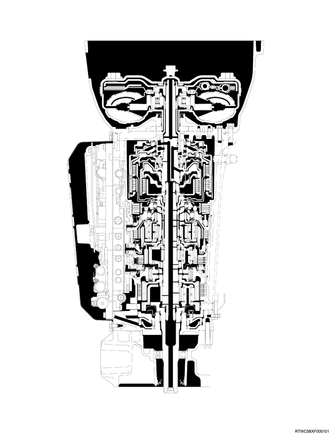
Note
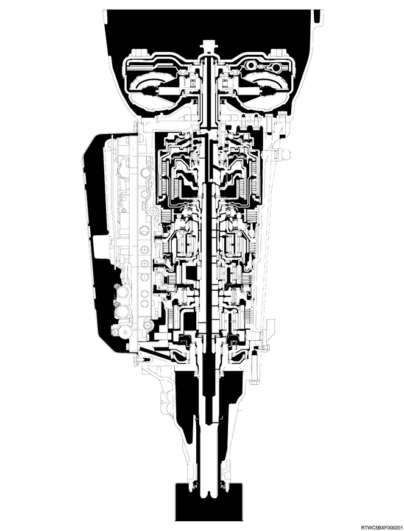
The TB-50LS automatic transmission is a 5-speed electronic control automatic transmission with manual mode. The automatic transmission is controlled by the TCM to perform the following control operations.
The shift timing control
Lock-up timing control
Slip lock-up control
Line pressure control
Clutch-to-clutch pressure control
Clutch pressure optimal control
Squat control
Reverse lock-out control
Running mode switching control
Engine torque control
Starter inhibitor control
The TCM determines the driving condition of the vehicle or the intention of the driver based on the inputs from the sensors, switches, etc., and performs the optimal control. Gearshifts in the automatic transmission are performed by the TCM through electrically controlling the solenoids, and the feedbacks on the operation status are given to the TCM by each sensor and switch.
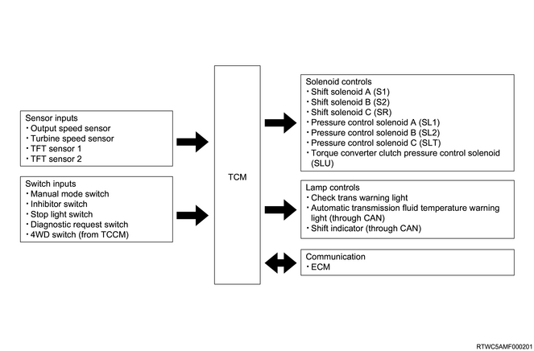
Shift timing control
The TCM selects the optimal shift map in accordance with each input signal, and performs the gearshift control based on the shift map. When shifting, the TCM appropriately controls each solenoid to reduce the shift shock at the time of accelerating or decelerating. Also, when an abnormality is detected in the automatic transmission system based on the information from the solenoids and sensors, the TCM performs the control that prohibits gearshifting.
Note
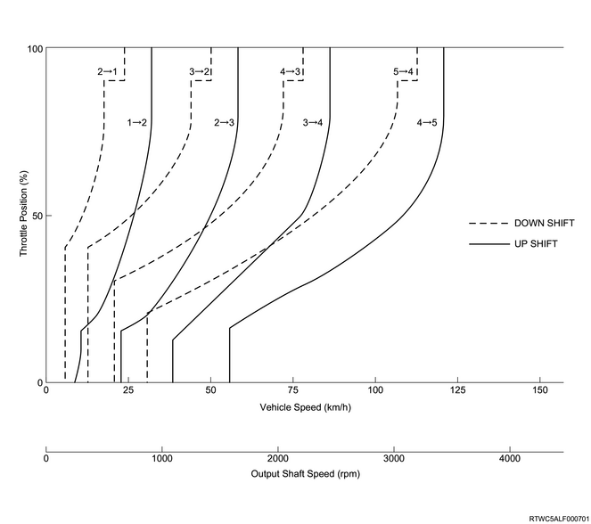
Note
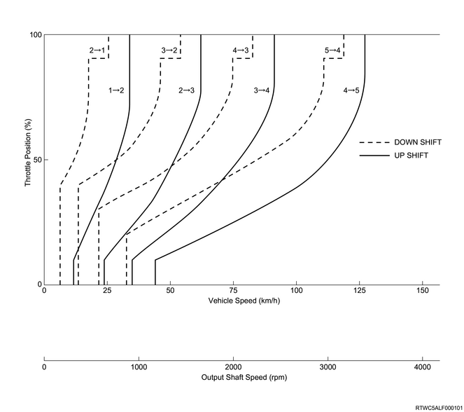
Lock-up timing control
The TCM performs the lock-up control in accordance with the selected shift map. When the TCM determines the lock-up point based on each input signal, it controls the torque converter clutch pressure control solenoid (SLU) to engage the lock-up clutch. Lock-up is activated when the gear is placed in the 3rd or higher gear position under the normal mode, and when the gear is placed in the 2nd or higher gear position under the hot mode. Also, under the manual mode, it is activated at each gear position to obtain the engine brake.
Note
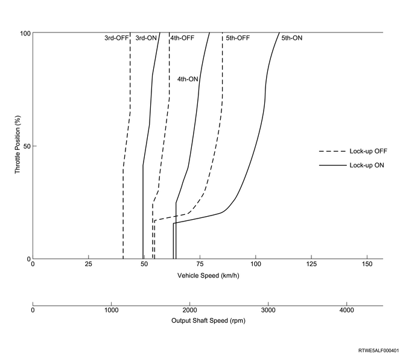
Note
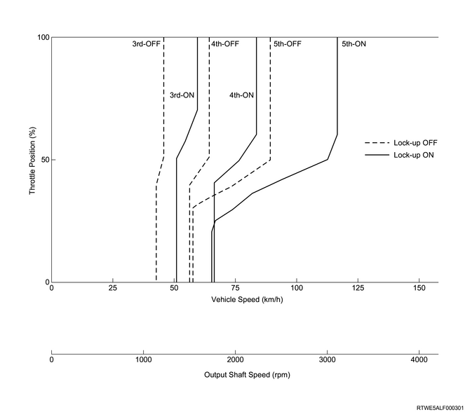
Slip lock-up control
The TCM can achieve improvement of fuel economy by slightly sliding the lock-up clutch in the lock-up OFF area at acceleration to expand the lock-up area to the lower speed area and suppressing the increase in engine rotation. While coasting with the gear placed in the 4th or higher gear position, the lock-up clutch is activated to encourage the engine brake and to suppress the idle fuel injection.
Also, by sliding the lock-up clutch, the engine vibrations can be now absorbed by the torque converter.
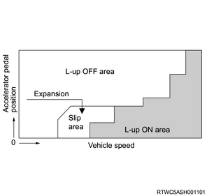
Line pressure control
In order to improve the shift feeling, the TCM determines the necessary line pressure in accordance with the operation condition, each input signal, and the engine torque information during gearshifting, and controls the pressure control solenoid C (SLT) according to the oil pressure.
Clutch-to-clutch pressure control
The TCM monitors the operation condition, each input signal, and the engine torque information during gearshifting from the 4th to the 5th gear and from the 5th to the 4th gear, and then in order to reduce the shock during the gearshifting, it directly controls the oil pressure of the clutch C1 and the brake B1 by activating the pressure control solenoid A (SL1) and B (SL2). It also optimizes the gearshift characteristics by self-learning the oil pressure at the previous gearshift and reflecting it.
Clutch pressure optimal control
The TCM calculates the optimal turbine torque based on signal from each sensor and then reduces the shock during the gearshift by activating the pressure control solenoid A (SL1) and C (SLT) to precisely control the line pressure. It also optimizes the gearshift characteristics by using the self-learning control to keep the change rate of the turbine speed constant.
Squat control
The squat control reduces the garage shock by controlling each solenoid, based on information obtained when the shift lever is operated from the N position to the R or D position or is operated from the R position to the D position while the vehicle is stopped.
Reverse lock-out control
While running forward at a certain speed or higher, when the TCM detects an operation to the R position due to a malfunction, it controls the shift solenoid A (S1), B (S2), and C (SR), to shift to the neutral position for risk prevention and transmission protection.
Driving mode switching control
To accommodate various driving conditions, the TCM makes a selection from 10 different driving modes depending on the driving condition.
Normal mode
Manual mode
Hot mode
Hot manual mode
L4 mode
Upslope 1 mode
Upslope 2 mode
Downslope mode
Cruise control mode
Warm up mode
Priorities of the driving modes are set in the order of hot manual mode, hot mode, manual mode, L4 mode, cruise control mode, warm up mode, downslope mode, upslope 2 mode, upslope 1 mode, normal mode, and the TCM selects a mode best suit for the driving condition from the driving modes.
Warm up control
The TCM switches the shift map to the warm up mode to improve operability and to facilitate transmission warm up when the engine coolant temperature is low.
L4 mode control
When the TCM detects 4WD-Low from the TCCM via CAN communication, it switches the mode to the L4 mode. With the L4 mode, shifting to the 5th gear position is prohibited, and the lock-up control is not performed.
Sequential control
The TCM switches the mode to the manual mode when the shift lever is operated from the D position to the right side. With the manual mode, the gear can be set to the position of driver's choice by operating the shift lever to the up shift position or the down shift position. However, when a vehicle speed of the set value or above/below is detected, the TCM performs automatic shifting without allowing any shift operation to protect the transmission.
Note
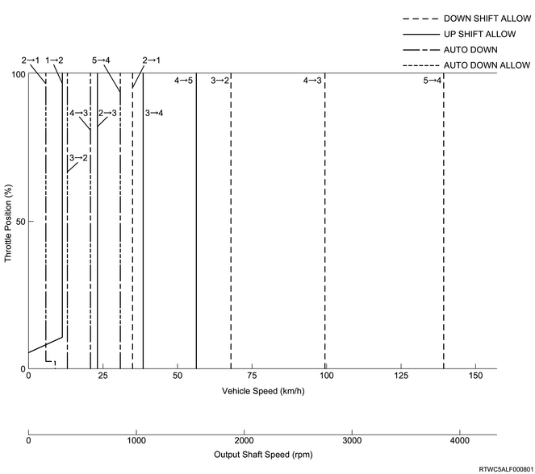
Note
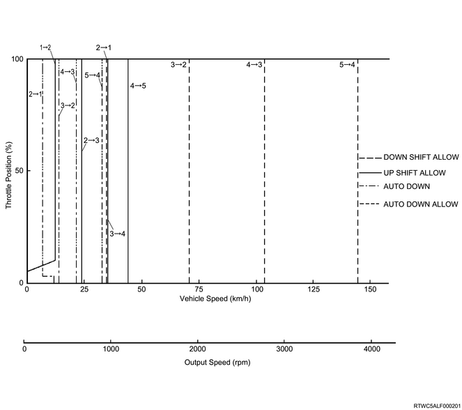
2nd start control
By selecting the 2nd gear position when starting or accelerating on a slippery road, the starting operation can be performed smoothly.
The 2nd start control can be performed only when the shift position is set to the manual position.
Cruise control
If the TCM detects the cruise control status from the ECM via CAN communication, it switches the mode to the cruise control mode to maintain the vehicle speed.
Hot mode control
When the ATF temperature is at the set value or higher, the TCM switches the mode to the hot mode to prevent increase in the ATF temperature. With the hot mode, by driving with a low speed gear, a larger driving power can be obtained, and oil temperature increase due to torque converter slip can be prevented. Also, using the lock-up with earlier timing lowers the ATF temperature and water temperature.
Slope control
When driving uphill, the TCM performs driving using the uphill mode to prevent repeated shifting due to speed deceleration and to obtain sufficient torque. Also, when driving downhill, the downhill mode is used to prevent up-shifting due to acceleration with accelerator off.
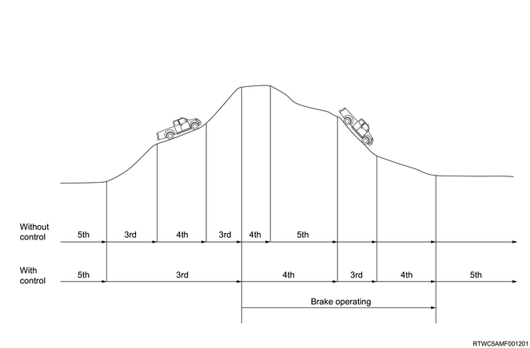
Engine torque control
The TCM outputs the torque request signal to the ECM via CAN communication to reduce the shift shock mainly due to the engine torque when shifting. The ECM reduces the engine torque through controlling the fuel injection, etc. based on the signal from the TCM.
In addition, by controlling the line pressure at the same time, the shift shock can be reduced.
Emergency mode
When the TCM detects a certain DTC, it changes the mode to the emergency mode to protect the automatic transmission. In the emergency mode, gear shifting is only available up to the forward 4th gear and to the reverse gear.
Starter inhibitor control
In an automatic transmission vehicle, there is a starter inhibitor circuit installed to prevent the starter from operating with the shift lever placed in a position other than the N or P position. When the shift lever is operated to the N or P position, the neutral switch on the starter relay circuit closes to ground the circuit, so the starter relay operates only when the shift lever is in the N or P position.
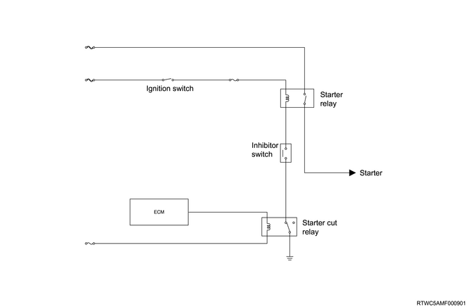
Selector lever unit
The selector lever unit converts the driver's shift operations into electric signals to transmit them to the TCM, and performs switching between forward and reverse positions, and between manual and normal modes.
The selector lever unit is equipped with manual mode switches that detect longitudinal and horizontal movements, and the TCM recognizes the operation status of the lever based on the ON signal of each switch. When the selector lever is shifted from the N position to the D position, the TCM performs shift control in the normal mode. When the selector lever is shifted from the D position to the right side, the TCM switches the mode to the manual mode and carries out shift control in accordance with the driver's lever operation in the direction towards the up shift or the down shift position. When the shift lever is operated to the D position in the manual mode, the mode switches to the normal mode, and when the shift lever is operated from the D position to the right side in the normal mode, the mode switches to the manual mode while maintaining the current gear position.
The selector lever unit is also equipped with the shift lock function, and when the selector lever is operated to the P position, the shift lock solenoid is activated, and the selector lever cannot be shifted to the R position unless the brake pedal is depressed.
The interlock controller detects the P position when the selector lever is operated to the P position and the shift lock control switch closes. When the interlock controller detects the P position, the shift lock solenoid is energized. While starting the vehicle, when the ON signal of the stoplight switch is input to the interlock controller, energization of the shift lock solenoid is stopped, and the shift lock is released.
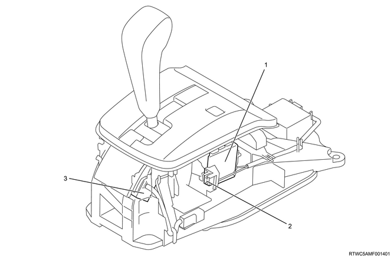
Key interlock mechanism
The key interlock mechanism is a mechanism installed on an automatic transmission vehicle, and the key cannot be pulled out when the shift position is other than the P position to prevent the vehicle from being parked with the selector lever placed in a position other than the P position.
The key interlock mechanism consists of the interlock controller and the shift lock control switch that are installed to the selector lever and the key interlock solenoid that is installed to the steering lock assembly.
When the selector lever is placed in a position other than the P position, the shift lock control switch opens, and the interlock controller does not energize the key interlock solenoid, so the key cannot be placed in the LOCK position.
When the selector lever is operated to the P position, the shift lock control switch closes, and the interlock controller energizes the key interlock solenoid, so the key can be placed in the LOCK position.
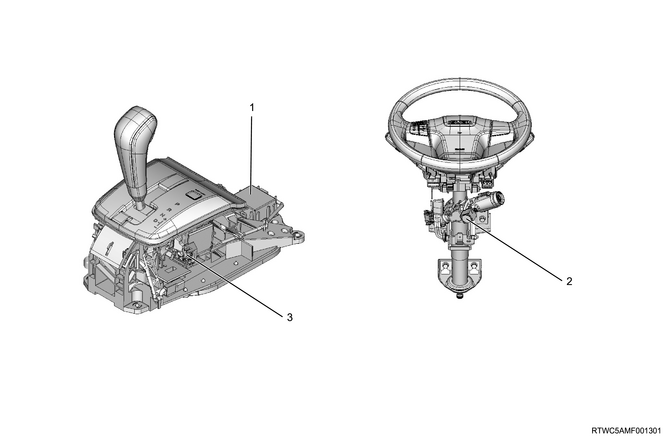
Power transmission
The TB-50LS automatic transmission configures 5 speeds in forward and 1 speed in reverse by making combinations out of 3 pairs of planetary gears, 3 pairs of multidisc clutches, 4 pairs of multidisc brakes and 3 pairs of one-way clutches.
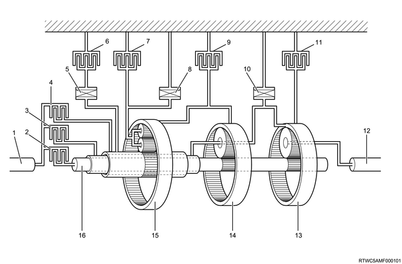
| Engagement control of the clutch and brake | |||||||||||
| Selector lever position | Gear position | C1 | C2 | C3 | B1 | B2 | B3 | B4 | F1 | F2 | F3 |
| P | - | ||||||||||
| R | Reverse | O | O | O | O | ||||||
| N | - | ||||||||||
| D | 1st | O | O | ||||||||
| 2nd | O | O | O | O | |||||||
| 3rd | O | O | O | O | |||||||
| 4th | O | O | O | O | |||||||
| 5th | O | O | O | O | |||||||
| M | 1st | O | |||||||||
| 2nd | O | O | O | ||||||||
| 3rd | O | O | O | O | |||||||
| 4th | O | O | O | O | |||||||
| 5th | O | O | O | O | O | ||||||
| O: Engaged | |||||||||||
| Functions of the clutch and brake | ||
| Part name | Symbol | Function |
| Clutch No. 1 | C1 | Connects the input shaft and the intermediate shaft. |
| Clutch No. 2 | C2 | Connects the input shaft and the middle planetary gear. |
| Clutch No. 3 | C3 | Connects the input shaft and the front sun gear. |
| Brake No. 1 | B1 | Fixes the front planetary carrier. |
| Brake No. 2 | B2 | Fixes the front and middle ring gears. |
| Brake No. 3 | B3 | Fixes the outer race of one-way clutch No. 2. |
| Brake No. 4 | B4 | Fixes the rear ring gear. |
| One-way clutch No. 1 | F1 | Fixes the left rotation of the front planetary carrier. |
| One-way clutch No. 2 | F2 | Fixes the left rotation of the front sun gear when the brake No. 3 operates. |
| One-way clutch No. 3 | F3 | Fixes the left rotation of the rear ring gear. |
Note
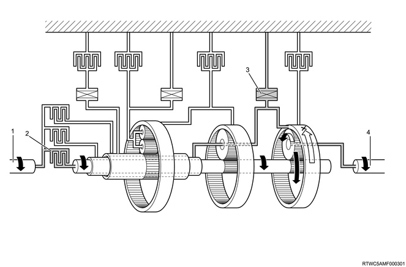
Note
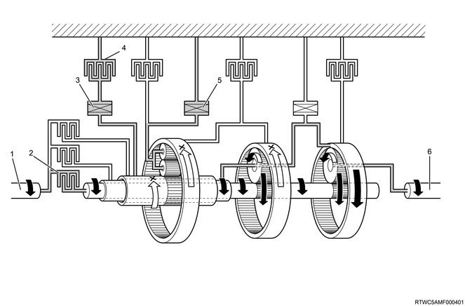
Note
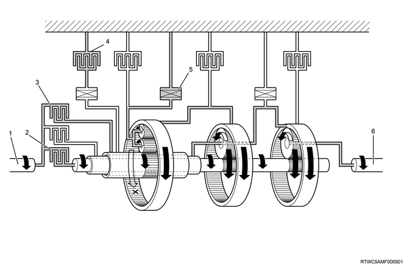
Note
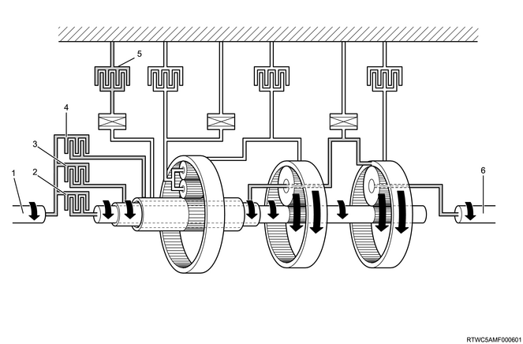
Note
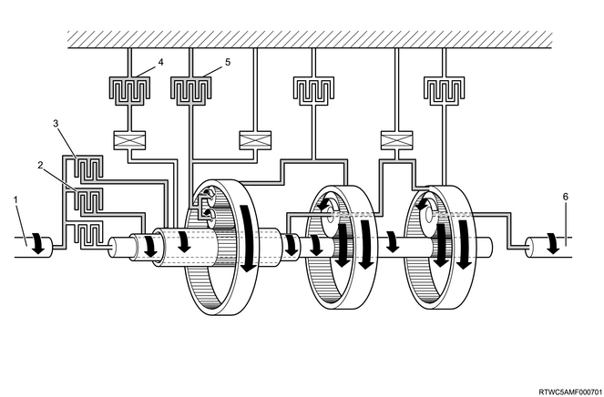
Note
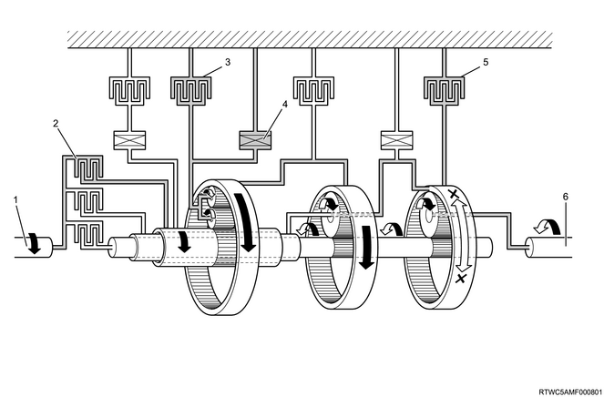
Torque converter
The torque converter transmits the engine power to the transmission. When the lock-up is not performed, the power is transmitted by the ATF, and when the lock-up is being performed, the power is transmitted by the lock-up piston. A torque converter which has 3 elements, 1 stage and 2 phases is used. 1 stage means that there is 1 turbine runner, and 2-phase means that the turbine runner operates as a torque converter when the turbine runner is rotating slowly according to the pump impeller, and the turbine runner operates as a fluid coupling when the turbine runner is rotating quickly according to the pump impeller.
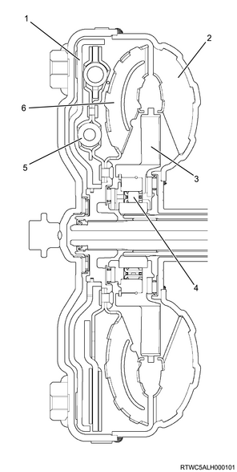
Oil pump
In the TB-50LS automatic transmission, a high performance and a lightweight oil pump is used. The drive gear is coaxially installed with the extension sleeve of the torque converter, and it rotates in the direction of engine rotation. Due to this, the oil pump body rotates, and the ATF is pressurized and discharged.
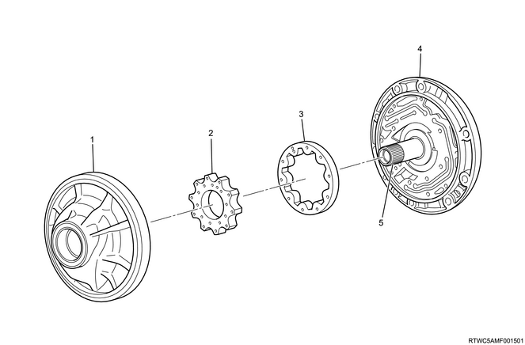
Inhibitor switch
The inhibitor switch is installed on the right side of the transmission, and detects the P, R, N and D positions of the selector lever. When the selector lever is shifted to any one of P, R, N, and D positions, the corresponding switch on the inhibitor switch is turned ON. A part of the inhibitor switch is connected to the starting circuit, and enables the engine to start only in the P or N range.
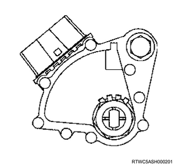
Output speed sensor
The output speed sensor detects the rotation of the parking lock gear that is installed on the rear planetary gear assembly. The output speed sensor is an electromagnetic pick type sensor, and generates pulse signals by the rotation of the gear. The output speed sensor signal is transmitted to the TCM, and the TCM calculates the vehicle speed based on this signal.
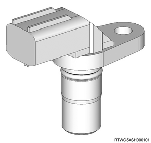
Turbine speed sensor
The turbine speed sensor detects the rotations of the forward clutch assembly and the direct clutch assembly. The turbine speed sensor is an electromagnetic pick type sensor, and generates pulse signals by the rotation of the gear. The turbine speed sensor signal is transmitted to the TCM, and the TCM calculates the input shaft speed based on this signal.
Transmission fluid temperature sensor
The transmission fluid temperature sensor 1 and 2 are installed on the valve body inside the transmission together with the internal harness, and detect the ATF temperature inside the valve body. The transmission fluid temperature sensors are thermistors, and the resistance value changes depending on the ATF temperature. The resistance value becomes smaller when the temperature rises, and the sensor output voltage decreases when the temperature rises. The transmission fluid temperature sensor 1 detects the temperature of oil pressure line, and the transmission fluid temperature sensor 2 detects the temperature of cooler line.
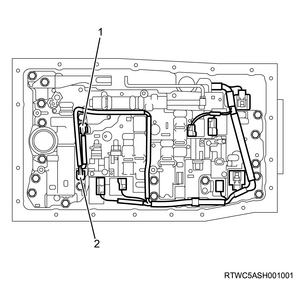
Solenoid
The TB-50LS automatic transmission uses the following 7 solenoids.
Shift solenoids A (S1), B (S2), and C (SR)
Pressure control solenoids A (SL1), B (SL2), and C (SLT)
Torque converter clutch pressure control solenoid (SLU)
The solenoid valves switch the oil pressure supply circuit to the clutch and the brake. The TCM controls each solenoid as follows in accordance with the target gear positions.
| Solenoids operation | ||||||
| Selector lever position | Gear position | Shift solenoid A (S1) | Shift solenoid B (S2) | Shift solenoid C (SR) | Pressure control solenoid A (SL1) | Pressure control solenoid B (SL2) |
| P | - | ON | OFF | OFF | MIN | MAX |
| R | Reverse | ON | OFF | OFF | MIN | MAX |
| N | - | ON | OFF | OFF | MIN | MAX |
| D | 1st | ON | OFF | OFF | MIN | MAX |
| 2nd | ON | ON | OFF | MIN | MAX | |
| 3rd | OFF | ON | OFF | MIN | MAX | |
| 4th | OFF | OFF | OFF | MIN | MAX | |
| 5th | OFF | OFF | ON | MAX | MIN | |
| M | 1st | ON | OFF | OFF | MIN | MIN |
| 2nd | ON | ON | ON | MIN | MIN | |
| 3rd | OFF | ON | OFF | MIN | MIN | |
| 4th | OFF | OFF | OFF | MIN | MAX | |
| 5th | OFF | OFF | ON | MAX | MIN | |
| ON: The control voltage is supplied OFF: The control voltage is not supplied MIN: The control current is lower MAX: The control current is higher | ||||||
Shift solenoid A (S1) and B (S2)
Shift solenoid A (S1) and B (S2) turn ON or OFF based on the control signal from the TCM to operate each shift valve. Each gear position is shifted based on the combination of shift valve operations.
Shift solenoid C (SR)
Shift solenoid C (SR) turns ON or OFF based on the control signal from the TCM to switch the C1 clutch. By activating the C1 clutch, it connects or disconnects the input shaft and the intermediate shaft.
Pressure control solenoid A (SL1) and B (SL2)
Pressure control solenoid A (SL1) and B (SL2) open or close the oil path based on the control current from the TCM to adjust the engaging pressures of the C1 clutch and he B1 brake at the time of 4th and 5th gears.
Pressure control solenoid C (SLT)
Pressure control solenoid C (SLT) opens or closes the oil path based on the control current from the TCM to adjust the pressure of the transmission fluid supplied from the oil pump.
Torque converter clutch pressure control solenoid (SLU)
The torque converter clutch pressure control solenoid (SLU) opens or closes the oil path based on the control current from the TCM to adjust the pressure of the ATF supplied to the lock-up clutch inside the torque converter.
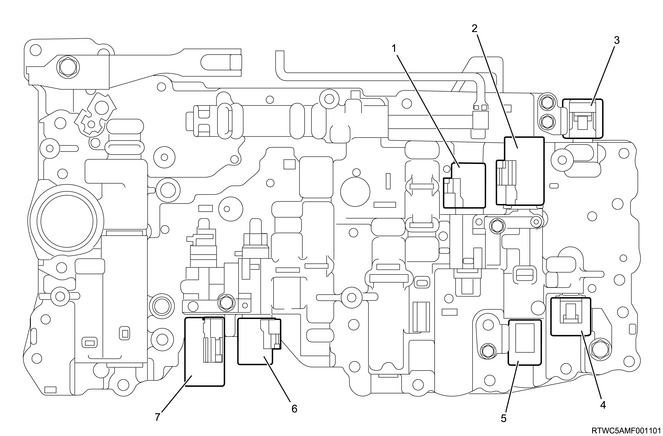
Check trans warning light
The check trans warning light informs the driver of an abnormality in the transmission control system. The check trans warning light normally comes on when the ignition switch is turned ON, and goes off after approx. 3 seconds, but if the TCM detects a DTC, it causes the check trans warning light to blink.
Note
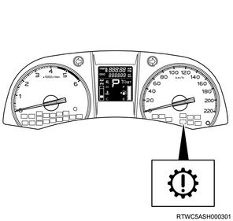
Note
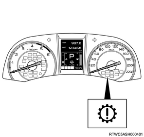
Note
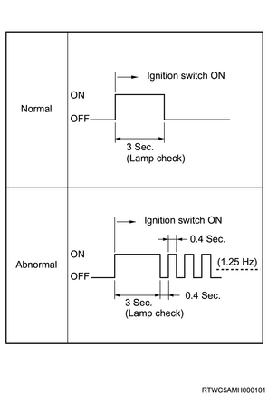
Automatic transmission fluid temperature warning light
The automatic transmission fluid temperature warning light informs the driver that the temperature of the ATF is high. When the TCM determines that the ATF temperature is 150 ˚C (302 ˚F) or higher based on the signal from the transmission fluid temperature sensor installed on the transmission, the TCM turns on the automatic transmission fluid temperature warning light through CAN communication.
Note
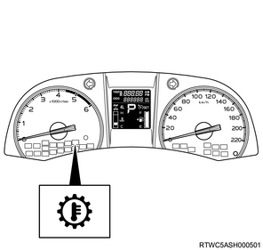
Note
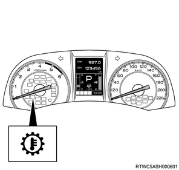
Shift indicator
The shift indicator informs the driver of the shift lever position. On the shift indicator, the shift lever position that the instrument panel cluster received from the TCM through CAN communication is displayed. When the vehicle is running in the normal mode with the selector lever placed in the D position, the shift indicator displays D, and when the selector lever is operated to the right side from the D position and the vehicle is running in the manual mode, the selected gear position is displayed on the shift indicator.
Note
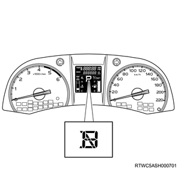
Note
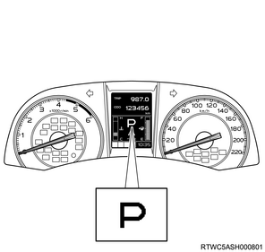
Note
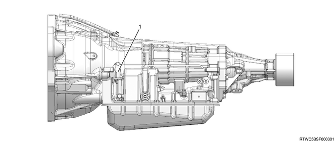
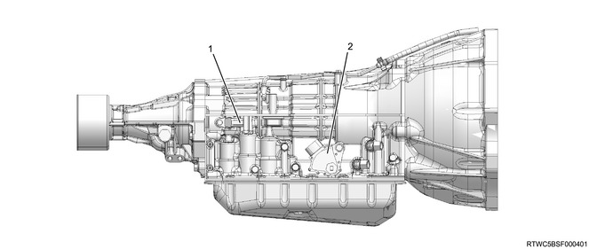
Note
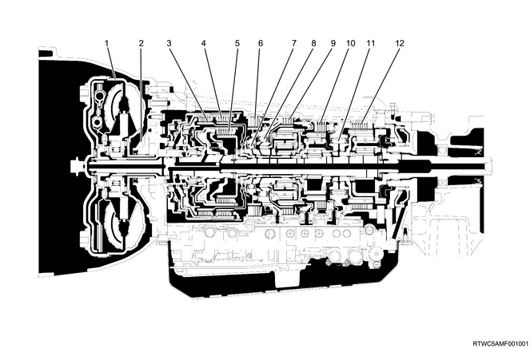
Note
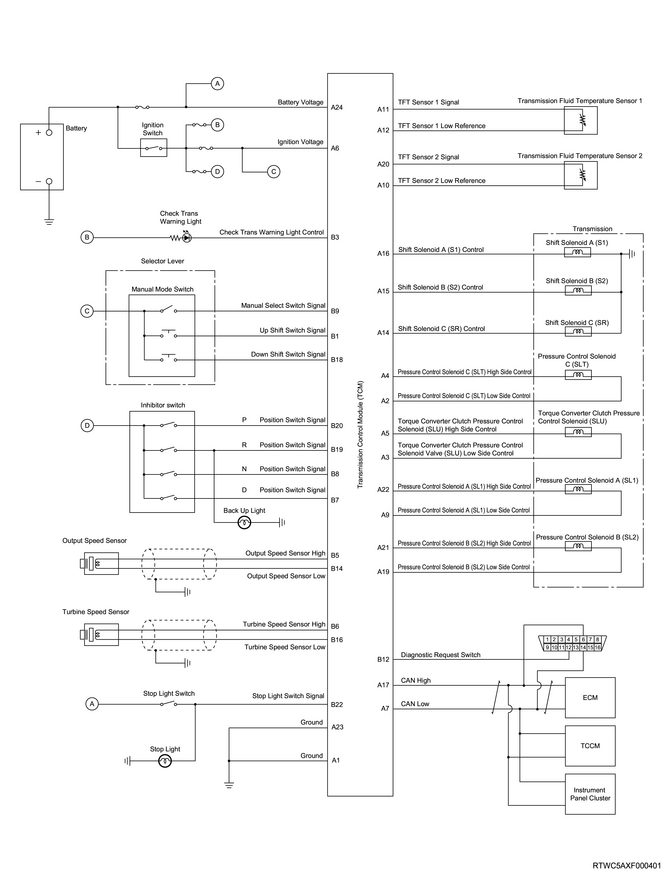
Note
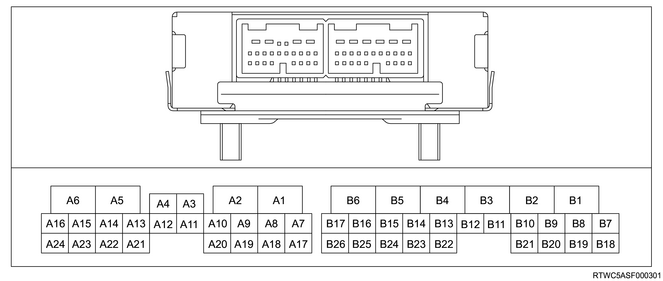
| No. | Pin function | No. | Pin function |
| A1 | Ground | B1 | Up shift switch signal |
| A2 | Pressure control solenoid C (SLT) low side control | B2 | Not used |
| A3 | Torque converter clutch pressure control solenoid (SLU) low side control | B3 | Check trans warning light control |
| A4 | Pressure control solenoid C (SLT) high side control | B4 | Not used |
| A5 | Torque converter clutch pressure control solenoid (SLU) high side control | B5 | Output speed sensor high |
| A6 | Ignition voltage | B6 | Turbine speed sensor high |
| A7 | CAN low signal | B7 | D position switch signal |
| A8 | Not used | B8 | N position switch signal |
| A9 | Pressure control solenoid A (SL1) low side control | B9 | Manual select switch signal |
| A10 | TFT sensor 2 low reference | B10 | Not used |
| A11 | TFT sensor 1 signal | B11 | Not used |
| A12 | TFT sensor 1 low reference | B12 | Diagnostic request switch |
| A13 | Not used | B13 | Not used |
| A14 | Shift solenoid C (SR) control | B14 | Output speed sensor low |
| A15 | Shift solenoid B (S2) control | B15 | Not used |
| A16 | Shift solenoid A (S1) control | B16 | Turbine speed sensor low |
| A17 | CAN high signal | B17 | Not used |
| A18 | Not used | B18 | Down shift switch signal |
| A19 | Pressure control solenoid B (SL2) low side control | B19 | R position switch signal |
| A20 | TFT sensor 2 signal | B20 | P position switch signal |
| A21 | Pressure control solenoid B (SL2) high side control | B21 | Not used |
| A22 | Pressure control solenoid A (SL1) high side control | B22 | Stop light switch signal |
| A23 | Ground | B23 | Not used |
| A24 | Battery voltage | B24 | Not used |
| - | - | B25 | Not used |
| - | - | B26 | Not used |
The ATF filling procedure has been changed in order to improve the accuracy of the ATF level when being repaired or replaced.
This mechanism consists of filler plug, overflow plug, transmission fluid temperature sensor, and check trans warning light.
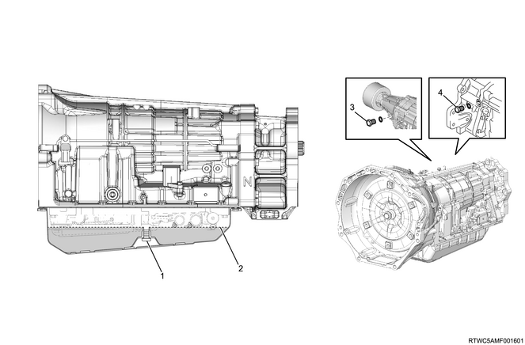
Note
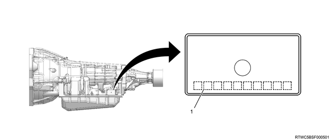
Note
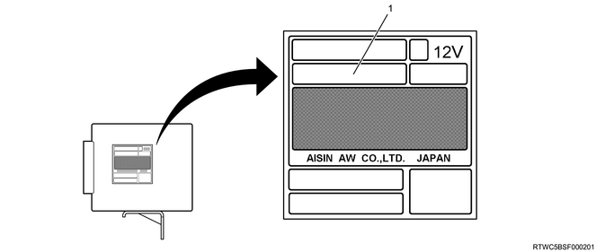